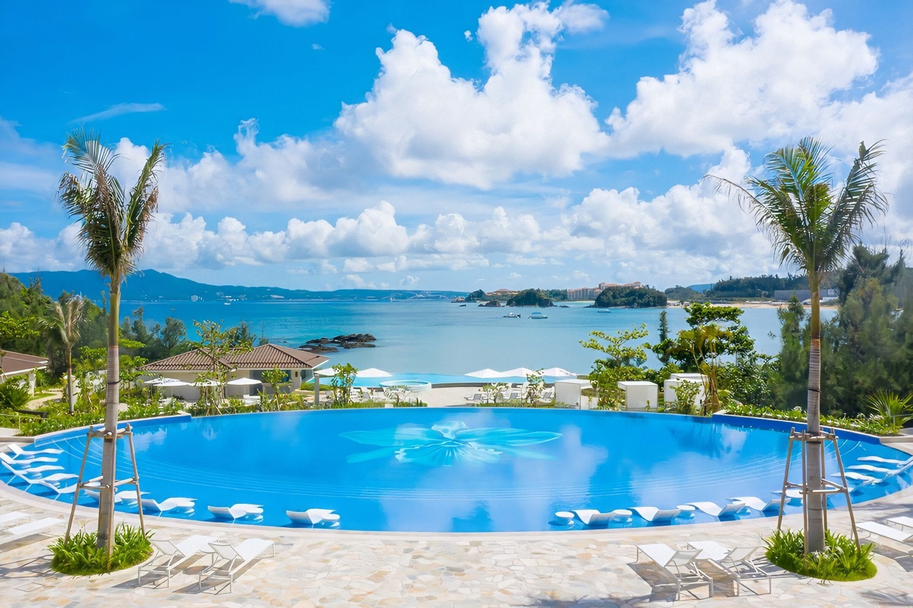
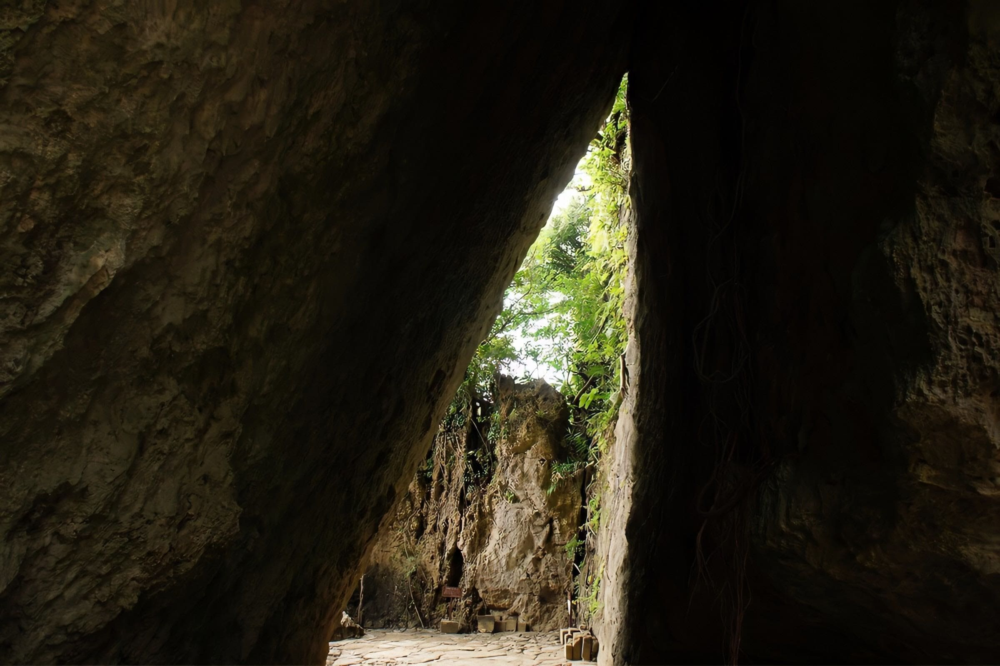
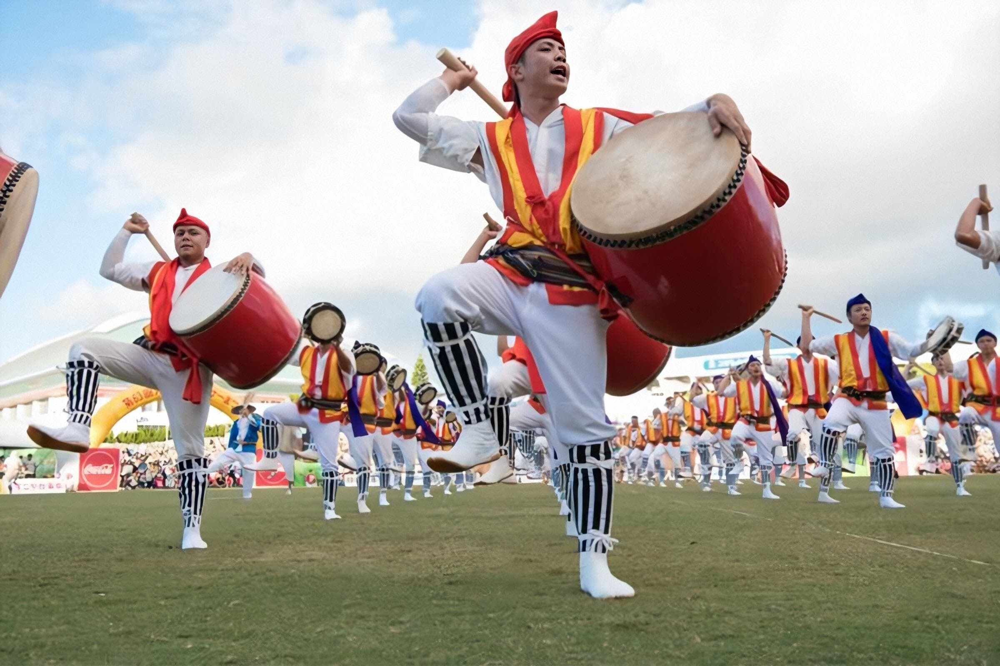
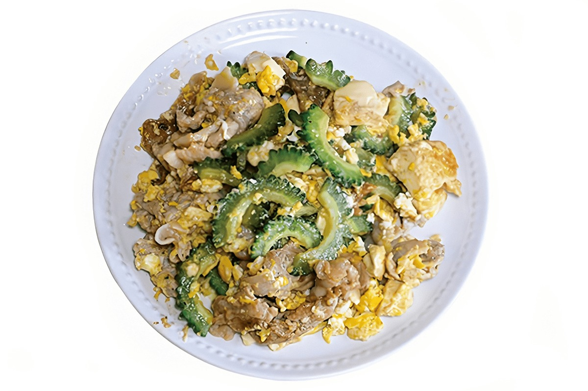
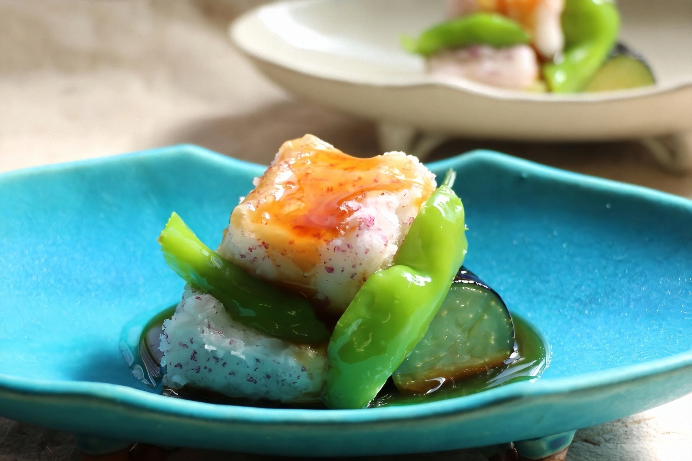
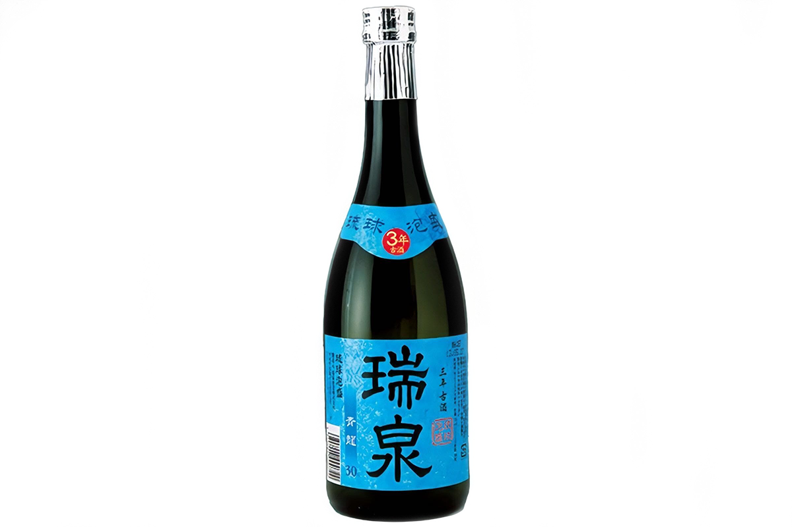
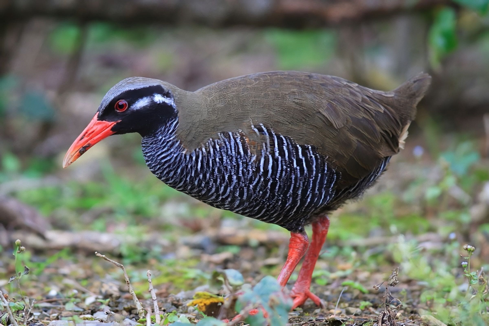

Префектура Окинава
Окинава: сто шестьдесят островов в субтропиках

Бассейн отеля «Халекулани Окинава» с мозаикой из орхидей на дне, а за ним бирюзовая бухта.
Самая южная префектура страны лежит в субтропиках: вокруг сто шестьдесят островов, вместо сакэ здесь варят крепкий напиток из риса, а на ужин подают горький овощ. Рассказываем, за чем ехать на Окинаву.
Карта: 237 мест из 69 статей · все статьи о префектуре Окинава
Карта
Окинава на карте
237 мест из наших статей о префектуре Окинава: замок Сюри и королевство Рюкю, окинавская соба и рынок Макиси, Ямбару, острова Керама, Мияко, Исигаки, Такэтоми, Ириомотэ и Хатэрума, курортные отели, эйса и карате. Нажмите на точку, чтобы открыть статью.
Пунктирный круг означает, что точка примерная: место находится в этом районе или на этом острове.
О префектуре
Острова, где сложилась своя страна
Окинава это единственная префектура Японии в субтропическом океаническом климате. Её острова разбросаны на очень большом пространстве: около тысячи километров с востока на запад и около четырёхсот с севера на юг, и всего здесь примерно сто шестьдесят островов, больших и совсем маленьких.
Рядом Китай, Тайвань и Юго-Восточная Азия, поэтому здесь веками шла морская торговля, и на островах сложилось самостоятельное государство Рюкю со своей культурой. Климат отличается от остальной Японии, обычные для японской кухни растения здесь не росли, а после Второй мировой войны острова долго находились под управлением американских военных. Так появилась особая кухня: гоя-тямпуру, окинавская соба и авамори соседствуют с американскими стейками и гамбургерами.
Сегодня это южный курорт. Острова окружают коралловые рифы, в списке Всемирного наследия числятся гусуку, то есть крепости королевства Рюкю, а крупные гостиничные марки одна за другой открывают здесь отели. Одним из первых в 2019 году пришёл «Халекулани Окинава», и префектура продолжает меняться.
Что посмотреть
Священная роща, где создали острова
Сэфа-утаки
Это главное святое место королевства Рюкю. По преданию, его создала богиня-творец Амамикё, и здесь шесть иби, то есть священных зон, где до сих пор совершают обряды. Вход открыт для посетителей, но это действующее место поклонения, поэтому вести себя здесь принято сдержанно.

- Адрес
- Chinen Kudeken, Nanjo, Okinawa
- Телефон
- +81 98-949-1899
Что ещё посмотреть
- Замок Сюри, крепость, вокруг которой каждый год проходит большой праздник
- Остров Кудака, маленький остров у южной оконечности
- Подводная дорога, дорога, проложенная прямо по морю между островами
Праздники
Барабаны, которые провожают предков
Эйса
Эйса это окинавское традиционное искусство, местный родственник общенационального танца бон, которым провожают души предков. В ночи старого праздника бон по улицам идут барабанщики: они бьют в большие барабаны и в маленькие нагрудные барабанчики паранку и танцуют целыми колоннами.

- Период
- с июня по сентябрь
- Место
- по всей префектуре Окинава
Другие праздники
- Хари, гонки на длинных лодках
- Перетягивание каната, массовая забава, в которой тянут огромный канат
- Праздник замка Сюри, историческое шествие у стен крепости
Музеи и архитектура
Крепости островного королевства
Гусуку Рюкю
Гусуку это крепости королевства Рюкю. Замок Сюри и соседние крепости вместе с другими связанными памятниками внесены в список Всемирного наследия ЮНЕСКО, а у стен замка каждый год устраивают праздник Сюри-дзё-мацури. Стены гусуку сложены из камня, и по ним видно, как островная архитектура приспосабливалась к тёплому влажному климату.
Местная кухня
Овощ, который горчит и освежает
Гоя-тямпуру
Слово тямпуру на окинавском диалекте значит «перемешать». В этом блюде перемешивают и жарят гоя, то есть горький огурец, а также тофу, то есть соевый творог, и свинину. Горечь овоща здесь считают не недостатком, а лекарством от жары.

Что ещё попробовать
- Соки-соба, лапша с большой тушёной куриной голенью
- Рафутэ, тушёная свиная грудинка
- Хираяти, жареная лепёшка из муки
Где поесть
Ресторан, где островная кухня стала современной
Рёритэн «Эй»
Здесь готовят авторские блюда из местных продуктов и подают кусус, то есть выдержанный авамори, который зреет годами. Ресторан любят и местные жители, и гости острова: зал похож на современное кафе, но посуду, стекло и ткани для него выбирали окинавские мастера.

- Адрес
- 1-27-35 Ishikawa, Uruma, Okinawa
- Телефон
- +81 98-964-7733
- Часы
- с 17:00 до 23:30, последний заказ в 22:30
- Выходные
- воскресенье
Ремёсла
Посуда, стекло и ткани островов
Островные ремёсла
Окинавские мастера работают с керамикой, стеклом и тканями. В ресторанах префектуры эту работу видно каждый день: еду здесь подают на местной посуде, а залы украшают островными тканями.
Что привезти
Крепкий напиток, который зреет годами
Авамори «Дзуйсэн» «Сэйрю»
Авамори это крепкий напиток из риса, островной родственник сакэ. Завод «Дзуйсэн» открылся в одном из немногих мест, где королевство Рюкю разрешало делать авамори на продажу, и следило за этим строго. «Сэйрю» это три года выдержки, то есть кусус; бутылка 720 миллилитров стоит 1485 иен.

- Телефон
- +81 98-884-1968
- Сайт
- zuisen.co.jp/
Где остановиться
Отель, который пришёл с Гавайев
«Халекулани Окинава»
Гавайский отель с историей больше ста лет открылся на Окинаве в 2019 году. Название можно перевести как «дом, достойный рая», и в отеле стараются держать такую же планку сервиса.
- Адрес
- 1967-1 Nakama, Onna, Kunigami, Okinawa
- Телефон
- +81 98-953-8600
- Комнат
- 360
- Цена
- от 51 000 иен за ночь за номер с завтраком, налоги и сбор не включены
Местный диалект
Как здесь говорят «очень вкусно»
- иппэ-маасаночень вкусно
- фусин, тюрасан яазвёзды, как красиво
- сини итакаттабыло очень больно
- мэнсоорэдобро пожаловать
Рекорды
Чем Окинава отличается от остальной страны
- Единственная в стране префектура в субтропическом океаническом климате
- Самая южная точка Японии тоже здесь, на этих островах
- 160 островов входят в префектуру
- 55 природных памятников охраняются в префектуре
Вопросы и ответы
Что ещё спрашивают об Окинаве
Что такое гусуку?
Так называют крепости королевства Рюкю. Замок Сюри и соседние крепости вместе с другими связанными памятниками внесены в список Всемирного наследия ЮНЕСКО.
Почему в окинавской кухне есть стейки и гамбургеры?
После Второй мировой войны острова долго находились под управлением американских военных, поэтому американская еда прижилась здесь рядом с местной.
Справочник
Окинава в цифрах
Общие сведения
| Административный центр | Наха |
| Муниципалитеты | 11 городов, 11 посёлков, 19 деревень |
| Площадь | 2281 кв. км |
| Население | 1,45 млн человек |
| Природных памятников | 55 |
| Всемирное наследие | гусуку королевства Рюкю и связанные памятники |
Климат
| Средняя температура | +23,5 |
| Максимум | +31,2 |
| Минимум | +14,4 |
Для путешественника
| Островов в префектуре | около 160 |
| Протяжённость с востока на запад | около 1000 км |
| Протяжённость с севера на юг | около 400 км |
| Крупные курорты | открываются с 2019 года один за другим |
Птицы здешних лесов
В списке природных памятников префектуры значатся редкие птицы островов: дятел ногутигэра, которого встречают только в глухих лесах севера, и хищный канимуриваси, то есть хохлатый орёл. Увидеть их непросто: леса Янбару на севере острова густые и сырые.

Природные памятники
- Ногутигэра, редкая птица, которую охраняют как памятник природы
- Яэсэ, большая коралловая отмель
- Дюгонь, морское животное, которое здесь охраняют
- Солёный источник Сиокава, источник с солёной водой
- Канимуриваси, хищная птица островов
Наши статьи
Все статьи о префектуре Окинава
Наха и Сюри
- Замок Сюри: пять пожаров, шесть веков и новый главный зал королевства Рюкю без точки на карте
- Рынок Макиси в Нахе: окинавская кухня после обновления без точки на карте
- Okinawa Harborview Hotel: полвека «гостевого дома» Окинавы в центре Нахи
- Цубоя: прогулка по кварталу ятимун и мастерская Ikutouen, где режут узор по глине
- «Миэ» в Нахе: кухня королевского двора Рюкю, которую готовят с 1958 года
- Nantou Seika в Нахе: сладости, которыми угощали при дворе королевства Рюкю
- «Уридзун» в Нахе: идзакая, которая вернула окинавцам гордость за авамори
- Сладости Окинавы: чёрный сахар, тоган-дзукэ, ледяная дзэндзай и сата-андаги
- Сладости Окинавы: тэмпура из батата, шу с таро, тофа, мёд Сюри, печёные пончики и булочка с орехами
- Двор королевства Рюкю: пиры для китайских послов и жрицы, хранившие короля
- Вечер по барам Нахи: пять заведений, куда местные водят друзей
Центр и юг острова Окинава
- Окинавская соба: от лапши на древесной золе до холодной собы с желе
- Hyakuna Garan: рюкюская гостиница с душой японского рёкана на юге Окинавы
- AQUASENSE Hotel & Resort в Онне: водная терраса, закаты и рюкюская китайская кухня
- Что едят сами окинавцы: американские сэндвичи, суп из утки и чёрная соба
- Что едят сами окинавцы: тэбити, островной тофу, ямайская кухня и сладости Мияко
- Cheeseanista в городе Окинава: козий сыр по греческим рецептам и ферма на лечебных травах
- Cliff Beer: крафтовое пиво из окинавской пшеницы, маракуйи и караки
- Рынок Happy More в Гиноване: окинавские овощи, смузи и продукты от фермеров
- TIMELESS CHOCOLATE: шоколад из какао и окинавского чёрного сахара
- Ром из чёрного сахара: как старейшая винокурня авамори в Сюри разливает по бутылкам острова Окинавы
- Motomu's Curry Bread: карри-пан с вагю, рождённый в Токио и выросший на Окинаве
- Кодза днём: колбасы tesio по немецким рецептам и магазин напитков LIQUID
- Mauvaise herbe: французская кухня из дикой птицы, кабана и трав Окинавы
- Фермерская и веганская Окинава: от Ямбару до восточных островов и Нахи
- Ремёсла Окинавы: королевская бингата, рюкюский лак и мастерские, куда стоит заехать
- Куда вести друзей на Окинаве: тур по закоулкам Нахи, кофе под шелковицей, бистро и сыр
- Фестиваль эйса всего острова: три дня барабанов и танцев в городе Окинава
- Кайтю-доро: дорога по морю от Урумы к восточным островам Окинавы
Север (Ямбару, Онна, Наго)
- HOSHINOYA Okinawa: сьют «Тида» у моря и ужин, где Италия встречается с Рюкю
- HOSHINOYA Okinawa: бингата, карате и танцы двора Рюкю в гостинице у моря
- Grand Mercure Okinawa Cape Zanpa Resort: курорт с горками и бассейнами у мыса Дзампа
- The Busena Terrace: виллы на мысе Бусэна, где море весь день рядом
- The Terrace Club Wellness Thalasso at Busena: морская вода, сон и еда до 800 ккал
- Oriental Hotel Okinawa Resort & Spa: ночной бассейн и бульон из тунца бонито у ворот Ямбару
- Halekulani Okinawa: гавайская гостиница с вековой историей на побережье Онны
- Hyatt Regency Seragaki Island Okinawa: курорт, занявший целый остров
- Hotel Nikko Alivila: испанская вилла среди тростниковых полей Ёмитана
- mui в Нандзё: гостиница-сосуд для ветра, моря и неспешных дней на юге Окинавы
- UMITO PLAGE The Atta Okinawa: девять сьютов в духе рюкюской усадьбы у пляжа Атта
- THE HIRAMATSU HOTELS & RESORTS Ginoza: ресторан с номерами на тихом берегу Ямбару
- «Анэттай сауна» в Мотобу: дровяная парная посреди субтропического леса
- Ямбару: лес природного наследия на севере Окинавы, водопад Хидзи и нелетающая птица куина
- «Эми но мисэ» в Огими: обед из островных овощей в деревне долгожителей
- Что привезти из Ямбару: 14 съедобных сувениров с севера острова Окинава
- Мастерская «Мансоан» в Ямбару: корзины из бамбука и лиан, как их плели всегда
Острова
- Острова Керама: Токасики, Дзамами, Ака и Гэрума в часе пути от Нахи
- Остров Такэтоми: красная черепица, коралловые улочки и как всё это снять
- HOSHINOYA Taketomi Island: пожить островитянином в деревне из красной черепицы
- Исигаки и малые острова Яэямы: мангровые реки, буйволы, коровы и кролики
- FUSAKI BEACH RESORT HOTEL & VILLAS: курорт на западе Исигаки, похожий на целую деревню
- Пипаати: островная пряность Исигаки, её ферма, кухня и сувениры
- Остров Мияко: море «мияко-блю», четыре пляжа и долгая ночь на улице Нэнкин-дори
- Малые острова Мияко: от рыбацкого Ирабу до Минны, где живут четыре человека
- Ёнагуни и Арагусуку: самый западный остров Японии и два островка Яэямы, куда не ходят паромы
- Хатэрума: самый южный обитаемый остров Японии, чёрный сахар и небо с Южным Крестом
- Ириомотэ: джунгли, мангровые реки и дикая кошка, которая живёт только здесь
- CHURA COLA: окинавская крафтовая кола на чёрном сахаре с острова Тарама без точки на карте
- Острова к северу и западу от Мотобу: Ихэя, Идзэна, Иэ, Нохо и Минна
- Острова к западу от Нахи: Агуни, Тонаки и Кумэдзима, гавань королевства Рюкю
- Оу, Цукэн и Кудака: каменный панцирь, морковный остров и остров богов
- Острова Дайто: Минами-Дайто и Кита-Дайто, самый восточный край Окинавы
Королевство Рюкю и культура
- Десять мест окинавской собы: от классики до бульона на ракушках и собы с островов
- Королевство Рюкю: как маленькое островное государство стало мостом между Китаем, Японией и Юго-Восточной Азией
- Шесть человек, которые создали королевство Рюкю: короли, реформаторы и дипломат
- Кухня, приплывшая по морю: как торговля создала рюкюскую еду без точки на карте
- Мифы Рюкю: священные рощи утаки, где боги спускались к людям
- Танцы, кумиодори и песни под сансин: как смотреть и слушать искусство Окинавы
- Окинавское карате: боевое искусство, которое начинается и заканчивается ката